감정평가사-1차-1교시 (2022-04-02 기출문제)
1과목: 민법(총칙,물권)
1. 민법의 법원(法源)에 관한 설명으로 옳은 것을 모두 고른 것은? (다툼이 있으면 판례에 따름)
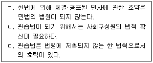
- ㄱ
- ㄴ
- ㄱ, ㄷ
- ㄴ, ㄷ
- ㄱ, ㄴ, ㄷ
(정답률: 알수없음)

2. 신의칙에 관한 설명으로 옳은 것을 모두 고른 것은? (다툼이 있으면 판례에 따름)
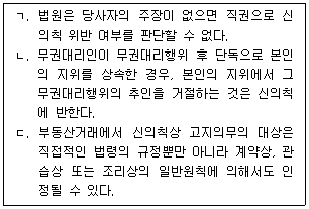
- ㄱ
- ㄴ
- ㄱ, ㄷ
- ㄴ, ㄷ
- ㄱ, ㄴ, ㄷ
(정답률: 알수없음)
3. 미성년자 甲과 그의 유일한 법정대리인인 乙에 관한 설명으로 옳은 것은? (다툼이 있으면 판례에 따름)
- 甲이 그 소유 물건에 대한 매매계약을 체결한 후에 미성년인 상태에서 매매대금의 이행을 청구하여 대금을 모두 지급받았다면 乙은 그 매매계약을 취소할 수 없다.
- 乙이 甲에게 특정한 영업에 관한 허락을 한 경우에도 乙은 그 영업에 관하여 여전히 甲을 대리할 수 있다.
- 甲이 乙의 동의 없이 타인의 적법한 대리인으로서 법률행위를 했더라도 乙은 甲의 제한능력을 이유로 그 법률행위를 취소할 수 있다.
- 甲이 乙의 동의 없이 신용구매계약을 체결한 이후에 乙의 동의 없음을 이유로 그 계약을 취소하는 것은 신의칙에 반한다.
- 乙이 재산의 범위를 정하여 甲에게 처분을 허락한 경우, 甲이 그에 관한 법률행위를 하기 전에는 乙은 그 허락을 취소할 수 있다.
(정답률: 알수없음)
4. 부재와 실종에 관한 설명으로 옳은 것은? (다툼이 있으면 판례에 따름)
- 부재자재산관리인의 권한초과행위에 대한 법원의 허가는 과거의 처분행위를 추인하는 방법으로는 할 수 없다.
- 법원은 선임한 재산관리인에 대하여 부재자의 재산으로 상당한 보수를 지급할 수 있다.
- 후순위 상속인도 실종선고를 청구할 수 있는 이해관계인에 포함된다.
- 동일인에 대하여 2차례의 실종선고가 내려져 있는 경우, 뒤에 내려진 실종선고를 기초로 상속관계가 인정된다.
- 실종선고를 받은 자가 실종기간 동안 생존했던 사실이 확인된 경우, 실종선고의 취소 없이도 이미 개시된 상속은 부정된다.
(정답률: 알수없음)
5. 민법상 법인에 관한 설명으로 옳지 않은 것은? (다툼이 있으면 판례에 따름)
- 재단법인의 정관변경은 그 정관에서 정한 방법에 따른 경우에도 주무관청의 허가를 얻지 않으면 효력이 없다.
- 사단법인과 어느 사원과의 관계사항을 의결하는 경우에는 원칙적으로 그 사원은 결의권이 없다.
- 사단법인의 사원자역의 득실에 관한 규정은 정관의 필요적 기재사항이다.
- 민법상 법인의 청산절차에 관한 규정에 반하는 합의에 의한 잔여재산처분행위는 특별한 사정이 없는 한 무효이다.
- 청산 중 법인의 청산인은 채권신고기간 내에는 채권자에 대하여 변제할 수 없으므로 법인은 그 기간 동안 지연배상 책임을 면한다.
(정답률: 알수없음)
6. 甲사단법인의 대표이사 乙이 외관상 그 직무에 관한 행위로 丙에게 불법행위를 한 경우에 관한 설명으로 옳지 않은 것은? (다툼이 있으면 판례에 따름)
- 乙의 불법행위로 인해 甲이 丙에 대해 손해배상책임을 지는 경우에도 乙은 丙에 대한 자기의 손해배상책임을 면하지 못한다.
- 甲의 손해배상책임 원인이 乙의 고의적인 불법행위인 경우에는 丙에게 과실이 있더라도 과실상계의 법리가 적용될 수 없다.
- 丙이 乙의 행위가 실제로는 직무에 관한 행위에 해당하지 않는다는 사실을 알았거나 중대한 과실로 알지 못한 경우에는 甲에게 손해배상책임을 물을 수 없다.
- 甲의 사원 丁이 乙의 불법행위에 가담한 경우, 丁도 乙과 연대하여 丙에 대하여 손해배상책임을 진다.
- 甲이 비법인사단인 경우라 하더라도 甲은 乙의 불법행위로 인한 丙의 손해를 배상할 책임이 있다.
(정답률: 알수없음)
7. 甲사단법인이 3인의 이사(乙, 丙, 丁)를 두고 있는 경우에 관한 설명으로 옳지 않은 것은? (다툼이 있으면 판례에 따름)
- 乙, 丙, 丁은 甲의 사무에 관하여 원칙적으로 각자 甲을 대표한다.
- 甲의 대내적 사무집행은 정관에 다른 규정이 없으면, 乙, 丙, 丁의 과반수로써 결정한다.
- 甲의 정관에 乙의 대표권 제한에 관한 규정이 있더라도 이를 등기하지 않으면 그와 같은 정관의 규정에 대해 악의인 제3자에 대해서도 대항할 수 없다.
- 丙이 제3자에게 甲의 제반 사무를 포괄 위임한 경우, 그에 따른 제3자의 사무대행행위는 원칙적으로 甲에게 효력이 없다.
- 甲의 토지를 丁이 매수하기로 한 경우, 이 사항에 관하여 丁은 대표권이 없으므로 법원은 이해관계인이나 검사의 청구에 의하여 임시이사를 선임하여야 한다.
(정답률: 알수없음)
8. 반사회질서의 법률행위로서 무효가 아닌 것은? (다툼이 있으면 판례에 따름)
- 반사회질서적인 조건이 붙은 법률행위
- 상대방에게 표시된 동기가 반사회질서적인 법률행위
- 부첩(夫妾)관계의 종료를 해제조건으로 하는 증여계약
- 오로지 보험사고를 가장하여 보험금을 취득할 목적으로 체결한 생명보험계약
- 주택매매계약서에서 양도소득세를 면탈할 목적으로 소유권이전등기를 일정 기간 후에 이전받기로 한 특약
(정답률: 알수없음)
9. 불공정한 법률행위에 관한 설명으로 옳지 않은 것은? (다툼이 있으면 판례에 따름)
- 급부와 반대급부 사이의 현저한 불균형은 그 무효를 주장하는 자가 증명해야 한다.
- 무경험은 어느 특정 영역에서의 경험부족이 아니라 거래일반에 대한 경험부족을 의미한다.
- 대리인에 의한 법률행위의 경우, 궁박 상태에 있었는지 여부는 본인을 기준으로 판단한다.
- 불공정한 법률행위로서 무효인 경우, 원칙적으로 추인에 의하여 유효로 될 수 없다.
- 경매절차에서 매각대금이 시가보다 현저히 저렴한 경우，그 경매는 불공정한 법률행위로서 무효이다.
(정답률: 알수없음)
10. 물건에 관한 설명으로 옳지 않은 것은? (다툼이 있으면 판례에 따름)
- 주물에 대한 압류의 효력은 특별한 사정이 없는 한 종물에는 미치지 않는다.
- 사람의 유골은 매장·관리의 대상이 될 수 있는 유체물이다.
- 전기 기타 관리할 수 있는 자연력은 물건이다.
- 법정과실은 수취할 권리의 존속기간 일수의 비율로 취득함이 원칙이다.
- 주물만 처분하고 종물은 처분하지 않기로 하는 특약은 유효하다.
(정답률: 알수없음)
11. 착오에 의한 의사표시에 관한 설명으로 옳지 않은 것은? (다툼이 있으면 판례에 따름)
- 대리인이 의사표시를 한 경우, 착오의 유무는 본인을 표준으로 판단하여야 한다.
- 착오가 표의자의 중대한 과실로 인한 때에는 표의자는 특별한 사정이 없는 한 그 의사표시를 취소할 수 없다.
- 착오로 인하여 표의자가 경제적인 불이익을 입지 않았다면 법률행위 내용의 중요부분의 착오라 할 수 없다.
- 상대방이 표의자의 진의에 동의한 경우, 표의자는 착오를 이유로 그 의사표시를 취소할 수 없다.
- 착오를 이유로 의사표시를 취소하는 자는 착오가 없었더라면 의사표시를 하지 않았을 것이라는 점을 증명하여야 한다.
(정답률: 알수없음)
12. 사기·강박에 의한 의사표시에 관한 설명으로 옳지 않은 것은? (다툼이 있으면 판례에 따름)
- 상대방의 기망행위로 의사결정의 동기에 관하여 착오를 일으켜 법률행위를 한 경우, 사기를 이유로 그 의사표시를 취소할 수 있다.
- 상대방이 불법적인 해악의 고지 없이 각서에 서명날인할 것을 강력히 요구하는 것만으로는 강박이 되지 않는다.
- 부작위에 의한 기망행위로도 사기에 의한 의사표시가 성립할 수 있다.
- 제3자에 의한 사기행위로 계약을 체결한 경우, 표의자는 먼저 그 계약을 취소하여야 제3자에 대하여 불법행위로 인한 손해배상을 청구할 수 있다.
- 매수인이 매도인을 기망하여 부동산을 매수한 후 제3자에게 저당권을 설정해 준 경우, 특별한 사정이 없는 한 제3자는 매수인의 기망사실에 대하여 선의로 추정된다.
(정답률: 알수없음)
13. 상대방 있는 의사표시의 효력발생에 관한 설명으로 옳은 것은? (다툼이 있으면 판례에 따름)
- 의사표시의 도달은 표의자의 상대방이 이를 현실적으로 수령하거나 그 통지의 내용을 알았을 것을 요한다.
- 제한능력자는 원칙적으로 의사표시의 수령무능력자이다.
- 보통우편의 방법으로 발송된 의사표시는 상당기간 내에 도달하였다고 추정된다.
- 표의자가 의사표시를 발송한 후 사망한 경우, 그 의사표시는 효력을 잃는다.
- 표의자가 과실로 상대방을 알지 못하는 경우에는 민사소송법 공시송달 규정에 의하여 의사표시의 효력을 발생시킬 수 있다.
(정답률: 알수없음)
14. 복대리에 관한 설명으로 옳지 않은 것은? (다툼이 있으면 판례에 따름)
- 대리권이 소멸하면 특별한 사정이 없는 한 복대리권도 소멸한다.
- 복대리인의 대리권은 대리인의 대리권의 범위보다 넓을 수 없다.
- 복대리인의 대리행위에 대해서는 표현대리가 성립할 수 없다.
- 법정대리인은 그 책임으로 복대리인을 선임할 수 있다.
- 임의대리인은 본인의 승낙이 있거나 부득이한 사유있는 때가 아니면 복대리인을 선임하지 못한다.
(정답률: 알수없음)
15. 甲으로부터 대리권을 수여받지 않은 甲의 처(妻) 乙은, 자신의 오빠 A가 丙에게 부담하는 고가의 외제자동차 할부대금채무에 대하여 甲의 대리인이라고 하면서 甲을 연대보증인으로 하는 계약을 丙과 체결하였다. 이에 관한 설명으로 옳은 것은? (다툼이 있으면 판례에 따름)
- 甲이 乙의 무권대리행위를 추인하기 위해서는 乙의 동의를 얻어야 한다.
- 甲이 자동차할부대금 보증채무액 중 절반만 보증하겠다고 한 경우, 丙의 동의가 없으면 원칙적으로 무권대리행위의 추인으로서 효력이 없다.
- 乙의 대리행위는 일상가사대리권을 기본대리권으로 하는 권한을 넘은 표현대리가 성립한다.
- 계약 당시 乙이 무권대리인임을 알지 못하였던 丙이 할부대금보증계약을 철회한 후에도 甲은 乙의 무권대리행위를 추인할 수 있다.
- 계약 당시 乙이 무권대리인임을 알았던 丙은 甲에게 乙의 무권대리행위의 추인 여부의 확답을 최고할 수 없다.
(정답률: 알수없음)
16. 법률행위의 무효에 관한 설명으로 옳지 않은 것은? (다툼이 있으면 판례에 따름)
- 매매계약이 약정된 매매대금의 과다로 인하여 불공정한 법률행위에 해당하는 경우, 무효행위의 전환에 관한 민법 제138조가 적용될 수 있다.
- 취소할 수 있는 법률행위를 취소한 후에도 무효인 법률행위의 추인의 요건과 효력으로서 추인할 수 있다.
- 법률행위의 일부무효에 관한 민법 제137조는 임의규정이다.
- 집합채권의 양도가 양도금지특약을 위반하여 무효인 경우, 채무자는 집합채권의 일부 개별 채권을 특정하여 추인할 수 없다.
- 무효인 가등기를 유효한 등기로 전용하기로 한 약정은 특별한 사정이 없는 한 그때부터 유효하고 이 로써 그 가등기가 소급하여 유효한 등기로 전환될 수 없다.
(정답률: 알수없음)
17. 법률행위의 취소에 관한 설명으로 옳지 않은 것은? (다툼이 있으면 판례에 따름)
- 취소할 수 있는 미성년자의 법률행위를 친권자가 추인하는 경우, 그 취소의 원인이 소멸한 후에 하여야만 효력이 있다.
- 제한능력자가 그 의사표시를 취소한 경우, 제한능력자는 그 행위로 인하여 받은 이익이 현존하는 한도에서 상환(償還)할 책임이 있다.
- 강박에 의하여 의사표시를 한 자의 포괄승계인은 그 의사표시를 취소할 수 있다.
- 취소권은 추인할 수 있는 날로부터 3년 내에, 법률행위를 한 날로부터 10년 내에 행사하여야 한다.
- 의사표시의 취소는 취소기간 내에 소를 제기하는 방법으로만 행사하여야 하는 것은 아니다.
(정답률: 알수없음)
18. 법률행위의 조건에 관한 설명으로 옳지 않은 것은?
- 조건의 성취로 인하여 이익을 받을 당사자가 신의성실에 반하여 조건을 성취시킨 때에는 상대방은 그 조건이 성취하지 아니한 것으로 주장할 수 있다.
- 법률행위 당시 이미 성취된 조건을 해제조건으로 하는 법률행위는 조건 없는 법률행위이다.
- 정지조건이 있는 법률행위는 특별한 사정이 없는 한 조건이 성취한 때로부터 그 효력이 생긴다.
- 조건 있는 법률행위의 당사자는 조건의 성부가 미정한 동안에 조건의 성취로 인하여 생길 상대방의 이익을 해하지 못한다.
- 조건의 성취가 미정인 권리도 일반규정에 의하여 담보로 할 수 있다.
(정답률: 알수없음)
19. 소멸시효의 기산점이 옳게 연결되지 않은 것은? (다툼이 있으면 판례에 따름)
- 부작위를 목적으로 하는 채권 - 위반행위시
- 동시이행의 항변권이 붙어 있는 채권 - 이행기 도래시
- 이행불능으로 인한 손해배상청구권 - 이행불능시
- 甲이 자기 소유의 건물 매도시 그 이익을 乙과 분배하기로 약정한 경우 乙의 이익금 분배청구권 - 분배약정시
- 기한이 있는 채권의 이행기가 도래한 후 채권자와 채무자가 기한을 유예하기로 합의한 경우 그 채권 - 변경된 이행기 도래시
(정답률: 알수없음)
20. 소멸시효의 중단과 정지에 관한 설명으로 옳지 않은 것은?
- 시효의 중단은 원칙적으로 당사자 및 그 승계인 간에만 효력이 있다.
- 파산절차참가는 채권자가 이를 취소하거나 그 청구가 각하된 때에는 시효중단의 효력이 없다.
- 부재자재산관리인은 법원의 허가 없이 부재자를 대리하여 상대방의 채권의 소멸시효를 중단시키는 채무의 승인을 할 수 없다.
- 천재 기타 사변으로 인하여 소멸시효를 중단할 수 없을 때에는 그 사유가 종료한 때로부터 1월내에는 시효가 완성하지 아니한다.
- 부부 중 한쪽이 다른 쪽에 대하여 가지는 권리는 혼인관계가 종료된 때부터 6개월 내에는 소멸시효가 완성되지 아니한다.
(정답률: 알수없음)
21. 부동산등기에 관한 설명으로 옳지 않은 것은? (다툼이 있으면 판례에 따름)
- 가등기된 권리의 이전등기는 가등기에 대한 부기등기의 형식으로 할 수 있다.
- 근저당권등기가 원인 없이 말소된 경우, 그 회복등기가 마쳐지기 전이라도 말소된 등기의 등기명의인은 적법한 권리자로 추정된다.
- 청구권보전을 위한 가등기에 기하여 본등기가 경료되면 본등기에 의한 물권변동의 효력은 가등기한 때로 소급하여 발생한다.
- 소유권이전등기의 원인으로 주장된 계약서가 진정하지 않은 것으로 증명되었다면 그 등기의 적법추정은 복멸된다.
- 동일 부동산에 관하여 동기명의인을 달리하여 중복된 소유권보존등기가 경료된 경우, 선행보존등기가 원인무효가 아닌 한 후행보존등기는 실체관계에 부합하더라도 무효이다.
(정답률: 알수없음)
22. 물권적 청구권에 관한 설명으로 옳지 않은 것은? (다툼이 있으면 판례에 따름)
- 지역권자는 지역권을 방해하는 자에 대하여 방해의 제거를 청구할 수 있다.
- 간접점유자는 제3자의 점유침해에 대하여 물권적 청구권을 행사할 수 있다.
- 직접점유자가 임의로 점유를 타인에게 양도한 경우에는 그 점유이전이 간접점유자의 의사에 반하더라도 간접점유자의 점유가 침탈된 경우에 해당하지 않는다.
- 부동산 양도담보의 피담보채무가 전부 변제되었음을 이유로 양도담보권설정자가 행사하는 소유권이전등기말소청구권은 소멸시효에 걸린다.
- 민법 제2⑤조 제2항이 정한 점유물방해제거청구권의 행사를 위한 '1년의 제척기간'은 출소기간이다.
(정답률: 알수없음)
23. 甲이 20년간 소유의 의사로 평온, 공연하게 乙소유의 X토지를 점유한 경우에 관한 설명으로 옳은 것을 모두 고른 것은? (다툼이 있으면 판례에 따름)
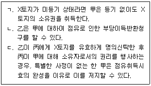
- ㄱ
- ㄷ
- ㄱ, ㄴ
- ㄴ, ㄷ
- ㄱ, ㄴ, ㄷ
(정답률: 알수없음)
24. 첨부에 관한 설명으로 옳지 않은 것은? (다툼이 있으면 판례에 따름)
- 주종을 구별할 수 있는 동산들이 부합하여 분리에 과다한 비용을 요할 경우, 그 합성물의 소유권은 주된 동산의 소유자에게 속한다.
- 타인이 권원에 의하여 부동산에 부속시킨 동산이 그 부동산과 분리되면 경제적 가치가 없는 경우, 그 동산의 소유권은 부동산 소유자에게 속한다.
- 양도담보권의 목적인 주된 동산에 甲소유의 동산이 부합되어 甲이 그 소유권을 상실하는 손해를 입은 경우, 특별한 사정이 없는 한 甲은 양도담보권자를 상대로 보상을 청구할 수 있다.
- 타인의 동산에 가공한 경우, 가공으로 인한 가액의 증가가 원재료의 가액보다 현저히 다액인 때에는 가공자의 소유로 한다.
- 건물의 증축 부분이 기존 건물에 부합하여 기존 건물과 분리해서는 별개의 독립물로서의 효용을 갖지 못하는 경우, 기존 건물에 대한 경매절차에서 경매목적물로 평가되지 않았더라도 매수인은 부합된 증축 부분의 소유권을 취득한다.
(정답률: 알수없음)
25. 선의취득에 관한 설명으로 옳지 않은 것은? (다툼이 있으면 판례에 따름)
- 경매에 의해서는 동산을 선의취득할 수 없다.
- 점유개정에 의한 인도로는 선의취득이 인정되지 않는다.
- 동산질권도 선의취득할 수 있다.
- 선의취득자는 임의로 선의취득의 효과를 거부하고 종전 소유자에게 동산을 반환받아갈 것을 요구할 수 없다.
- 점유보조자가 횡령한 물건은 민법 제250조의 도품·유실물에 해당하지 않는다.
(정답률: 알수없음)
26. 주위토지통행권에 관한 설명으로 옳지 않은 것은? (다툼이 있으면 판례에 따름)
- 토지의 분할로 주위토지통행권이 인정되는 경우, 통행권자는 분할당사자인 통행지 소유자의 손해를 보상하여야 한다.
- 통행지 소유자는 통행지를 배타적으로 점유하고 있는 주위토지통행권자에 대해 통행지의 인도를 청구할 수 있다.
- 주위토지통행권은 법정의 요건을 충족하면 당연히 성립하고 요건이 없어지면 당연히 소멸한다.
- 주위토지통행권에 기한 통행에 방해가 되는 축조물을 설치한 통행지 소유자는 그 철거의무를 부담한다.
- 주위토지통행권의 범위는 현재의 토지의 용법에 따른 이용의 범위에서 인정된다.
(정답률: 알수없음)
27. 점유에 관한 설명으로 옳은 것은? (다툼이 있으면 판례에 따름)
- 미등기건물의 양수인은 그 건물에 관한 사실상의 처분권을 보유하더라도 건물부지를 점유하고 있다고 볼 수 없다.
- 건물 공유자 중 일부만이 당해 건물을 점유하고 있는 경우, 그 건물의 부지는 건물 공유자 전원이 공동으로 점유하는 것으로 볼 수 있다.
- 점유자의 권리적법추정 규정(민법 제200조)은 특별한 사정이 없는 한 등기된 부동산에도 적용된다.
- 선의의 점유자라도 본권에 관한 소에 패소한 때에는 그 패소판결이 확정된 때로부터 악의의 점유자로 본다.
- 진정한 소유자가 점유자를 상대로 소유권이전등기의 말소청구소송을 제기하여 점유자의 패소로 확정된 경우,그 소가 제기된 때부터 점유자의 점유는 타주점유로 전환된다.
(정답률: 알수없음)
28. 甲, 乙, 丙은 X토지를 각각 7분의 1, 7분의 2, 7분의 4의 지분으로 공유하고 았다. 이에 관한 설명으로 옳지 않은 것은? (다툼이 있으면 판례에 따름)
- 甲이 乙, 丙과의 협의 없이 X토지 전부를 독점적으로 점유하는 경우, 乙은 甲에 대하여 공유물의 보존행위로서 X토지의 인도를 청구할 수 없다.
- 丁이 X토지 전부를 불법으로 점유하는 경우, 甲은 단독으로 X토지 전부의 인도를 청구할 수 있다.
- 丙이 甲, 乙과의 협의 없이 X토지 전부를 戊에게 임대한 경우, 甲은 戊에게 차임 상당액의 7분의 1을 부당이득으로 반환할 것을 청구할 수 있다.
- 甲, 乙, 丙과의 X토지 사용·수익에 관한 특약이 공유지분권의 본질적 부분을 침해하지 않는 경우라면 그 특약은 丙의 특정승계인에게 승계될 수 있다.
- 甲은 특별한 사정이 없는 한 乙, 丙의 동의 없이 X토지에 관한 자신의 지분을 처분할 수 있다.
(정답률: 알수없음)
29. 공유물 분할에 관한 설명으로 옳지 않은 것은? (다툼이 있으면 판례에 따름)
- 공유물분할청구권은 형성권에 해당한다.
- 공유관계가 존속하는 한 공유물분할청구권만이 독립하여 시효로 소멸될 수 없다.
- 부동산의 일부 공유지분 위에 저당권이 설정된 후 그 공유부동산이 현물분할된 경우, 저당권은 원칙적으로 저당권설정자에게 분할된 부분에 집중된다.
- 공유물분할청구의 소에서 법원은 원칙적으로 공유물분할을 청구하는 원고가 구하는 방법에 구애받지 않고 재량에 따라 합리적 방법으로 분할을 명할 수 있다.
- 공유자는 특별한 사정이 없는 한 언제든지 공유물의 분할을 청구할 수 있다.
(정답률: 알수없음)
30. 관습상의 법정지상권에 관한 설명으로 옳지 않은 것은? (다툼이 있으면 판례에 따름)
- 토지 또는 그 지상 건물의 소유권이 강제경매절차로 인하여 매수인에게 이전된 경우, 매수인의 매각대금 완납시를 기준으로 토지와 그 지상 건물이 동일인 소유에 속하였는지 여부를 판단하여야 한다.
- 관습상의 법정지상권이 성립하였으나 건물 소유자가 토지 소유자와 건물의 소유를 목적으로 하는 토지 임대차계약을 체결한 경우, 그 관습상의 법정지상권은 포기된 것으로 보아야 한다.
- 관습상의 법정지상권은 이를 취득할 당시의 토지소유자로부터 토지소유권을 취득한 제3자에게 등기없이 주장될 수 있다.
- 관습상의 법정지상권이 성립한 후에 건물이 증축된 경우, 그 법정지상권의 범위는 구 건물을 기준으로 그 유지·사용을 위하여 일반적으로 필요한 범위 내의 대지 부분에 한정된다.
- 관습상의 법정지상권 발생을 배제하는 특약의 존재에 관한 주장·증명책임은 그 특약의 존재를 주장하는 측에 있다.
(정답률: 알수없음)
31. 지역권에 관한 설명으로 옳지 않은 것은? (다툼이 있으면 판례에 따름)
- 통행지역권의 점유취득시효는 승역지 위에 도로를 설치하여 늘 사용하는 객관적 상태를 전제로 한다.
- 요역지의 공유자 중 1인이 지역권을 취득한 때에는 다른 공유자도 이를 취득한다.
- 요역지의 공유자 중 1인에 의한 지역권소멸시효의 중단은 다른 공유자에게는 효력이 없다.
- 점유로 인한 지역권취득기간의 중단은 지역권을 행사하는 모든 공유자에 대한 사유가 아니면 그 효력이 없다.
- 통행지역권을 시효취득한 요역지 소유자는 특별한 사정이 없는 한 승역지에 대한 도로 설치 및 사용에 의하여 승역지 소유자가 입은 손해를 보상해야 한다.
(정답률: 알수없음)
32. 전세권에 관한 설명으로 옳지 않은 것은? (다툼이 있으면 판례에 따름)
- 전세금의 지급은 전세권 성립의 요소이다.
- 기존 채권으로 전세금의 지급에 갈음할 수 있다.
- 농경지를 전세권의 목적으로 할 수 있다.
- 전세금이 경제사정의 변동으로 인하여 상당하지 아니하게 된 때에는 당사자는 장래에 대하여 그 증감을 청구할 수 있다.
- 전세권의 목적물의 전부 또는 일부가 전세권자에 책임있는 사유로 인하여 멸실된 경우, 전세권설정자는 전세권이 소멸된 후 전세금으로써 손해의 배상에 충당할 수 있다.
(정답률: 알수없음)
33. 전세권에 관한 설명으로 옳지 않은 것은? (다툼이 있으면 판례에 따름)
- 타인의 토지에 있는 건물에 전세권을 설정한 때에는 전세권의 효력은 그 건물의 소유를 목적으로 한 지상권에 미친다.
- 건물전세권설정자가 건물의 존립을 위한 토지사용권을 가지지 못하여 그가 토지소유자의 건물철거 등 청구에 대항할 수 없는 경우, 전세권자는 토지소유자의 권리행사에 대항할 수 없다.
- 지상권을 가지는 건물소유자가 그 건물에 전세권을 설정하였으나 그가 2년 이상의 지료를 지급하지 아니하였음을 이유로 지상권설정자가 지상권의 소멸을 청구한 경우, 전세권자의 동의가 없다면 지상권은 소멸되지 않는다.
- 대지와 건물이 동일한 소유자에 속한 경우에 건물에 전세권을 설정한 때에는 그 대지 소유권의 특별승계인은 전세권설정자에 대하여 지상권을 설정한 것으로 본다.
- 건물에 대한 전세권의 존속기간을 1년 미만으로 정한 때에 는 이를 1년으로 한다.
(정답률: 알수없음)
34. 민사유치권자 甲에 관한 설명으로 옳지 않은 것은?
- 甲이 수취한 유치물의 과실은 먼저 피담보채권의 원본에 충당하고 그 잉여가 있으면 이자에 충당한다.
- 甲은 피담보채권의 변제를 받기 위하여 유치물을 경매할 수 있다.
- 甲이 유치권을 행사하더라도 피담보채권의 소멸시효의 진행에는 영향을 미치지 않는다.
- 甲은 채무자의 승낙이 없더라도 유치물의 보존에 필요한 사용은 할 수 있다.
- 甲은 피담보채권 전부의 변제를 받을 때까지 유치물 전부에 대하여 그 권리를 행사할 수 있다.
(정답률: 알수없음)
35. 민사유치권에 관한 설명으로 옳은 것은? (다툼이 있으면 판례에 따름)
- 유치권 배제 특약이 있더라도 다른 법정요건이 모두 충족되면 유치권이 성립한다.
- 채무자는 상당한 담보를 제공하고 유치권의 소멸을 청구할 수 있다.
- 원칙적으로 유치권은 채권자 자신 소유 물건에 대해서도 성립한다.
- 채권자가 채무자를 직접점유자로 하여 간접점유하는 경우, 채권자의 점유는 유치권의 요건으로서의 점유에 해당한다.
- 채권자의 점유가 불법행위로 인한 경우에도 유치권이 성립한다.
(정답률: 알수없음)
36. 민사동산질권에 관한 설명으로 옳지 않은 것은?
- 질권자는 피담보채권의 변제를 받기 위하여 질물을 경매할 수 있고, 그 매각대금으로부터 일반채권자와 동일한 순위로 변제받는다.
- 질권은 양도할 수 없는 물건을 목적으로 하지 못한다.
- 질권은 다른 약정이 없는 한 원본, 이자, 위약금, 질권실행의 비용, 질물보존의 비용 및 채무불이행 또는 질물의 하자로 인한 손해 배상의 채권을 담보한다.
- 질권자는 피담보채권의 변제를 받을 때까지 질물을 유치할 수 있으나 자기보다 우선권이 있는 채권자에게 대항하지 못한다.
- 수개의 채권을 담보하기 위하여 동일한 동산에 수개의 질권을 설정한 때에는 그 순위는 설정의 선후에 의한다.
(정답률: 알수없음)
37. 민법 제365조의 일괄경매청구권에 관한 설명으로 옳은 것을 모두 고른 것은? (다툼이 있으면 판례에 따름)
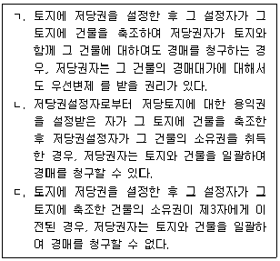
- ㄱ
- ㄴ
- ㄷ
- ㄴ, ㄷ
- ㄱ, ㄴ, ㄷ
(정답률: 알수없음)
38. 민법 제366조의 법정지상권에 관한 설명으로 옳은 것을 모두 고른 것은? (다툼이 있으면 판례에 따름)
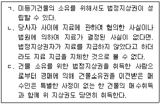
- ㄱ
- ㄴ
- ㄱ, ㄷ
- ㄴ, ㄷ
- ㄱ, ㄴ, ㄷ
(정답률: 알수없음)
39. 근저당권에 관한 설명으로 옳지 않은 것은? (다툼이 있으면 판례에 따름)
- 근저당권 의 존속기간이나 결산기를 정한 경우, 원칙적으로 결산기가 도래하거나 존속기간이 만료한 때에 그 피담보채무가 확정된다.
- 근저당권의 존속기간이나 결산기를 정하지 않고 피담보채권의 확정방법에 관한 다른 약정이 없는 경우, 근저당권설정자는 근저당권자를 상대로 언제든지 계약 해지의 의사표시를 하여 피담보채무를 확정시킬 수 있다.
- 근저당권자가 피담보채무의 불이행을 이유로 경매신청을 한 경우, 경매신청시에 근저당권의 피담보채권액이 확정된다.
- 후순위 근저당권자가 경매를 신청한 경우, 선순위 근저당권의 피담보채권은 매수인이 매각대금을 완납한 때에 확정된다.
- 공동근저당권자가 저당목적 부동산 중 일부 부동산에 대하여 제3자가 신청한 경매절차에 소극적으로 참가하여 우선배당을 받은 경우, 특별한 사정이 없는 한 나머지 저당목적 부동산에 관한 근저당권의 피담보채권도 확정된다.
(정답률: 알수없음)
40. 저당권에 관한 설명으로 옳지 않은 것은? (다툼이 있으면 판례에 따름)
- 저당권은 그 담보한 채권과 분리하여 타인에게 양도하거나 다른 채권의 담보로 하지 못한다.
- 저당물의 소유권을 취득한 제3자는 그 저당물에 관한 저당권 실행의 경매절차에서 경매인이 될 수 있다.
- 특별한 사정이 없는 한 건물에 대한 저당권의 효력은 그 건물에 종된 권리인 건물의 소유를 목적으로 하는 지상권에도 미친다.
- 전세권을 목적으로 한 저당권이 설정된 후 전세권이 존속기간 만료로 소멸된 경우, 저당권자는 전세금반환채권에 대하여 물상대위권을 행사할 수 있다.
- 저당목적물의 변형물인 물건에 대하여 이미 제3자가 압류하여 그 물건이 특정된 경우에도 저당권자는 스스로 이를 압류하여야 물상대위권을 행사할 수 있다.
(정답률: 알수없음)
2과목: 경제학원론
41. 재화 X의 시장수요곡선(D)과 시장공급곡선(S)이 아래 그림과 같을 때, 균형가격(P*)과 균형거래량(Q*)은? (단, 시장수요곡선과 시장공급곡선은 선형이며, 시장공급곡선은 수평이다.)
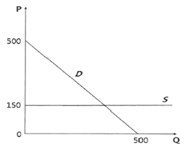
- P* = 150, Q* = 150
- P* = 150, Q* = 350
- P* = 150, Q* = 500
- P* = 350, Q* = 150
- P* = 500, Q* = 150
(정답률: 알수없음)
42. 기업 A의 생산함수는 Q=min{L, 2K}이다. 노동가격은 3이고, 자본가격은 5 일 때, 최소 비용으로 110을 생산하기 위한 생산요소 묶음은? (단, Q는 생산량, L은 노동, K는 자본이다.)
- L = 55, K = 55
- L = 55, K = 110
- L = 110, K = 55
- L = 110, K = 70
- L = 110, K = 110
(정답률: 알수없음)
43. ( )에 들 어갈 내용으로 옳은 것은?
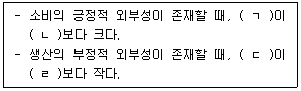
- ㄱ: 사회적 한계편익, ㄴ: 사적 한계편익, ㄷ: 사적 한계 비용, ㄹ: 사회적 한계비용
- ㄱ: 사적 한계편익, ㄴ: 사회적 한계편익, ㄷ: 사적 한계 비용, ㄹ: 사회적 한계비용
- ㄱ: 사회적 한계편익, ㄴ: 사적 한계편익, ㄷ: 사회적 한계비용, ㄹ: 사적 한계 비용
- ㄱ: 사적 한계편익, ㄴ: 사회적 한계편익, ㄷ: 사회적 한계비용, ㄹ: 사적 한계 비용
- ㄱ: 사회적 한계편익, ㄴ: 사적 한계 비용, ㄷ: 사적 한계편익, ㄹ: 사회적 한계비용
(정답률: 알수없음)
44. 기업 A의 생산함수는 Q = √L 이며, 생산물의 가격은 5, 임금률은 0.5이다. 이윤을 극대화하는 노동투입량(L*)과 산출량(Q*)은? (단, Q는 산출량, L은 노동투입량이며, 생산물시장과 노동시장은 완전경쟁시장이다.)
- L* = 10, Q* = √10
- L* = 15, Q* = √15
- L* = 20, Q* = 2√5
- L* = 25, Q* = 5
- L* = 30, Q* = √30
(정답률: 알수없음)
45. ( )에 들어갈 내용으로 옳지 않은 것은? (단, 수요곡선은 우하향, 공급곡선은 우상향한다.)
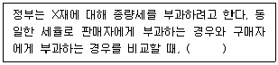
- 구매자가 내는 가격은 동일하다.
- 판매자가 받는 가격은 동일하다.
- 조세수입의 크기는 동일하다.
- 균형 거래량이 모두 증가한다.
- 총잉여는 모두 감소한다.
(정답률: 알수없음)
46. 완전경쟁시장에서 이윤극대화를 추구하는 기업 A의 한계비용(MC), 평균총비용(AC), 평균가변비용(AVC)은 아래 그림과 같다. 시장가격이 P1, P2, P3, P4, P5로 주어질 때, 이에 관한 설명으로 옳지 않은 것은?
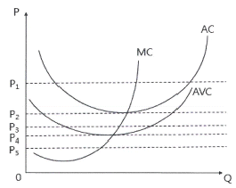
- P1일 때 총수입이 총비용보다 크다.
- P2일 때 손익분기점에 있다.
- P3일 때 총수입으로 가변비용을 모두 충당하고 있다.
- P4일 때 총수입으로 고정비용을 모두 충당하고 있다.
- P5일 때 조업중단을 한다.
(정답률: 알수없음)
47. 기술혁신으로 노동의 한계생산이 증가한다면, ( ㄱ )균형 노동량의 변화와 ( ㄴ )균형임금률의 변화는? (단, 생산물시장과 노동시장은 완전경쟁적이며, 노동공급곡선은 우상향, 노동수요곡선은 우하향하고 있다.)
- ㄱ: 감소, ㄴ: 감소
- ㄱ: 감소, ㄴ: 증가
- ㄱ: 감소, ㄴ: 불변
- ㄱ: 증가, ㄴ: 감소
- ㄱ: 증가, ㄴ: 증가
(정답률: 알수없음)
48. 시장 구조를 비교하여 요약·정리한 표이다. ( ㄱ ) ~ ( ㅁ ) 중 옳지 않은 것은? (단, MR은 한계수입, MC는 한계비용, P는 가격이다.)
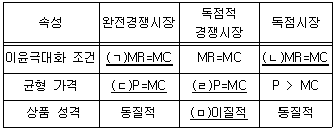
- ㄱ
- ㄴ
- ㄷ
- ㄹ
- ㅁ
(정답률: 알수없음)
49. ( )에 들어갈 내용으로 옳은 것은?
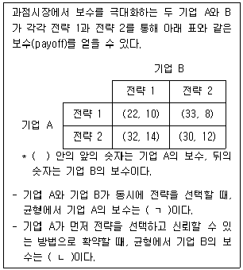
- ㄱ: 22, ㄴ: 8
- ㄱ: 30, ㄴ: 8
- ㄱ: 32, ㄴ: 10
- ㄱ: 32, ㄴ: 14
- ㄱ: 33, ㄴ: 12
(정답률: 알수없음)
50. 단일 가격을 부과하던 독점기업이 제1급(first-degree) 가격차별 또는 완전(perfect) 가격차별을 실행하는 경우에 나타나는 변화로 옳은 것을 모두 고른 것은?
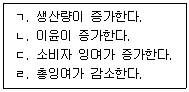
- ㄱ, ㄴ
- ㄱ, ㄷ
- ㄱ, ㄹ
- ㄴ, ㄷ
- ㄷ, ㄹ
(정답률: 알수없음)
51. 소비자 갑의 효용함수는 U=3X2+Y2 이며 X재 가격은 6, Y재 가격은 2, 소득은 120이다. 효용을 극대화하는 갑의 최적소비조합(X, Y)은?
- (0, 60)
- (6, 42)
- (10, 30)
- (15, 15)
- (20, 0)
(정답률: 알수없음)
52. ( )에 들어갈 내용으로 옳은 것은? (단, P는 가격, Q는 수요량이다.)
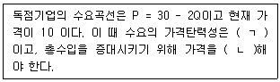
- ㄱ: 비탄력적, ㄴ: 인하
- ㄱ: 비탄력적, ㄴ: 인상
- ㄱ: 단위탄력적, ㄴ: 유지
- ㄱ: 탄력적, ㄴ: 인하
- ㄱ: 탄력적, ㄴ: 인상
(정답률: 알수없음)
53. X재 가격이 하락할 때 아래의 설명 중 옳은 것을 모두 고른 것은? (단, X재와 Y재만 존재하며 주어진 소득을 두 재화에 모두 소비한다.)
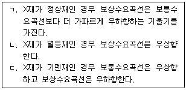
- ㄱ
- ㄴ
- ㄱ, ㄷ
- ㄴ, ㄷ
- ㄱ, ㄴ, ㄷ
(정답률: 알수없음)
54. 두 재화 X, Y를 소비하는 갑의 효용함수가 U(X, Y) = X0.3Y0.7이다. 이에 관한 설명으로 옳지 않은 것은?
- 선호체계는 단조성을 만족한다.
- 무차별곡선은 원점에 대해 볼록하다.
- 효용을 극대화할 때, 소득소비곡선은 원점을 지나는 직선이다.
- 효용을 극대화할 때, 가격소비곡선은 X재 가격이 하락할 때 Y재의 축과 평행하다.
- 효용을 극대화할 때, 소득이 2배 증가하면 X재의 소비는 2배 증가한다.
(정답률: 알수없음)
55. 두 재화 X재와 Y재를 소비하는 갑은 가격이 (PX, PY) = (1, 4) 일 때 소비조합 (X, Y) = (6, 3), 가격 이 (PX, PY) = (2, 3)으로 변화했을 때 소비조합 (X, Y) = (7, 2), 그리고 가격이 (PX, PY) = (4, 2) 으로 변화했을 때 소비조합 (X, Y) = (6, 4)을 선택하였다. 이에 관한 설명으로 옳은 것을 모두 고른 것은?
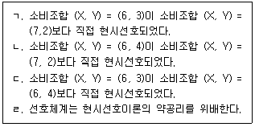
- ㄱ, ㄴ
- ㄱ, ㄷ
- ㄱ, ㄹ
- ㄴ, ㄷ
- ㄷ, ㄹ
(정답률: 알수없음)
56. 두 재화 X와 Y만을 소비하는 두 명의 소비자 갑과 을이 존재하는 순수교환경제에서 갑의 효용함수는 U갑(X갑, Y갑) = min{X갑, Y갑}, 을의 효용함수는 U을(X을, Y을) = X을 × Y을 이다. 갑과 을의 초기 부존자원(X, Y)이 각각 (30, 60), (60, 30)이고 X재의 가격이 1이다. 일반균형(general equilibrium)에서 Y재의 가격은?
- 1/3
- 1/2
- 1
- 2
- 3
(정답률: 알수없음)
57. 꾸르노(Cournot) 복점모형에서 시장수요곡선이
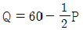
이고 두 기업 A, B의 비용함수가 각각 CA = 40QA + 10, CB = 20QB + 50 일 때, 꾸르노 균형에서 총생산량(Q*)과 가격(P*)은? (단, Q는 총생산량, P는 가격, QA는 기업 A의 생산량, QB는 기업 B의 생산량이다.)- Q* : 10, P* : 100
- Q* : 20, P* : 80
- Q* : 30, P* : 60
- Q* : 40, P* : 40
- Q* : 50, P* : 20
(정답률: 알수없음)
58. A국에서는 교역 이전 X재의 국내가격이 국제가격보다 더 높다. 교역 이후 국제가격으로 A국이 X재의 초과수요분을 수입한다면, 이로 인해 A국에 나타나는 효과로 옳은 것은? (단, 공급곡선은 우상향, 수요곡선은 우하향한다.)
- 교역 전과 비교하여 교역 후 생산자 잉여가 감소한다.
- 교역 전과 비교하여 교역 후 소비자 잉여가 감소한다.
- 생산자 잉여는 교역 여부와 무관하게 일정하다.
- 교역 전과 비교하여 교역 후 총잉여가 감소한다.
- 총잉여는 교역 여부와 무관하게 일정하다.
(정답률: 알수없음)
59. 노동시장이 수요독점일 때 이에 관한 설명으로 옳은 것을 모두 고른 것은? (단, 생산물 시장은 완전경쟁시장이며, 노동수요곡선은 우하향, 노동공급곡선은 우상향한다.)
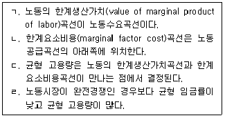
- ㄱ, ㄴ
- ㄱ, ㄷ
- ㄱ, ㄹ
- ㄴ, ㄷ
- ㄷ, ㄹ
(정답률: 알수없음)
60. 독점기업이 공급하는 X재의 시장수요곡선은 Q = 200 – P이고, 기업의 사적 비용함수는 C = Q2 + 20Q + 10이고, 환경오염에 의한 추가적 비용을 포함한 사회적 비용함수는 SC = 2Q2 + 20Q + 20이다. 이 경우 사회적으로 바람직한 최적생산량은? (단, Q는 생산량, P는 시장가격이다.)
- 24
- 36
- 60
- 140
- 164
(정답률: 알수없음)
61. 개방경제하에서 국민소득의 구성 항목이 아래와 같을 때 경상수지는? (단, C는 소비, I는 투자, G는 정부지출, T는 조세, SP는 민간저축이다.)
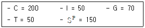
- 50
- 60
- 70
- 80
- 90
(정답률: 알수없음)
62. 물가지수에 관한 설명으로 옳은 것을 모두 고른 것은?
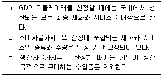
- ㄱ
- ㄴ
- ㄱ, ㄴ
- ㄱ, ㄷ
- ㄴ, ㄷ
(정답률: 알수없음)
63. A국의 생산가능인구는 100만명, 경제활동인구는 60만명, 실업자는 6만 명이다. 실망실업자(구직단념자)에 속했던 10만 명이 구직활동을 재개하여, 그 중 9만 명이 일자리를 구했다. 그 결과 실업률과 고용률은 각각 얼마인가?
- 6%, 54%
- 10%, 54%
- 10%, 63%
- 10%, 90%
- 15%, 90%
(정답률: 알수없음)
64. A국의 단기 필립스 곡선이 아래와 같을 때 이에 관한 설명으로 옳지 않은 것은? (단, π, πe, u, un은 각각 인플레이션율, 기대 인플레이션율, 실업률, 자연 실업률이다.)
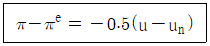
- 총공급곡선이 수직선인 경우에 나타날 수 있는 관계이다.
- 총수요 충격이 발생하는 경우에 나타날 수 있는 관계이다.
- 인플레이션율과 실업률 사이에 단기적으로 상충관계가 있음을 나타낸다.
- 고용이 완전고용수준보다 높은 경우에 인플레이션율은 기대 인플레이션율보다 높다.
- 인플레이션율을 1%p 낮추려면 실업률은 2%p 증가되어야 한다.
(정답률: 알수없음)
65. A국 중앙은행은 아래의 테일러 규칙(Taylor rule)에 따라 명목정책금리를 조정한다. 이에 관한 설명으로 옳지 않은 것은? {단, 총생산 캡 = (실질GDP – 완전고용실질GDP) / 완전고용 실질GDP 이다.}
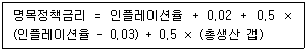
- A국 중앙은행의 인플레이션율 목표치는 3% 이다.
- 인플레이션율 목표치를 2%로 낮추려면 명목정책금리를 0.5%p 인하해야 한다.
- 인플레이션율이 목표치와 동일하고 총생산 갭이 1%인 경우 실질 이자율은 2.5% 이다.
- 완전고용 상태에서 인플레이션율이 2%인 경우에 명목정책금리는 3.5%로 설정해야 한다.
- 인플레이션율이 목표치보다 1%p 더 높은 경우에 명목정책금리를 0.5%p 인상한다.
(정답률: 알수없음)
66. 아래의 개방경제 균형국민소득 결정모형에서 수출이 100만큼 늘어나는 경우 ( ㄱ )균형소득의 변화분과 ( ㄴ )경상수지의 변화분은? (단, C는 소비, Y는 국민소득, T는 세금, I는 투자, G는 정부지출, X는 수출, M은 수입이며, 수출 증가 이전의 경제상태는 균형이다.)
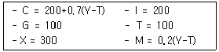
- ㄱ: 1000, ㄴ: 100
- ㄱ: 1000/3, ㄴ: 100/3
- ㄱ: 1000/3, ㄴ: 100
- ㄱ: 200, ㄴ: 60
- ㄱ: 200, ㄴ: 100
(정답률: 알수없음)
67. 폐쇄경제 IS-LM과 AD-AS의 동시균형 모형에서 투자를 증가시키되 물가는 원래 수준으로 유지시킬 가능성이 있는 것은? (단, IS곡선은 우하향, LM곡선은 우상향, AD곡선은 우하향, AS곡선은 우상향한다.)
- 긴축 재정정책
- 팽창 통화정책
- 긴축 재정정책과 팽창 통화정책의 조합
- 팽창 재정정책과 긴축 통화정책의 조합
- 팽창 재정정책과 팽창 통화정책의 조합
(정답률: 알수없음)
68. 투자가 실질 이자율에 의해 결정되는 폐쇄경제 IS-LM 모형에서 기대 인플레이션이 상승할 때 나타나는 결과로 옳은 것은? (단, IS 곡선은 우하향, LM곡선은 우상향한다.)
- 명목 이자율과 실질 이자율이 모두 상승한다.
- 명목 이자율과 실질 이자율이 모두 하락한다.
- 명목 이자율은 하락하고 실질 이자율은 상승한다.
- 실질 이자율은 상승하고, 생산량은 감소한다.
- 실질 이자율은 하락하고, 생산량은 증가한다.
(정답률: 알수없음)
69. 폐쇄경제 IS-LM 모형에서 재정정책과 통화정책이 생산량에 미치는 효과의 크기에 관한 설명으로 옳은 것을 모두 고른 것은? (단, IS는 우하향, LM은 우상향하는 직선이다.)
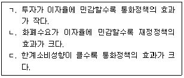
- ㄱ
- ㄷ
- ㄱ, ㄴ
- ㄱ, ㄷ
- ㄴ, ㄷ
(정답률: 알수없음)
70. 자본이동이 완전한 소규모 개방경제의 먼텔-플레밍(Mundell-Fleming)모형에서 변동환율제도인 경우, 긴축 통화정책을 시행할 때 나타나는 경제적 효과를 모두 고른 것은? (단, 물가수준은 고정이다.)
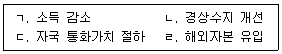
- ㄱ, ㄴ
- ㄱ, ㄷ
- ㄱ, ㄹ
- ㄴ, ㄷ
- ㄷ, ㄹ
(정답률: 알수없음)
71. 연구 증가와 기술진보가 없는 솔로우(Solow) 경제성장모형에서 1인당 생산함수는 y = 5k0.4, 자본의 감가상각률은 0.2일 때, 황금률 (Golden rule)을 달성하게 하는 저축률은? (단, y는 1인당 생산량, k는 1인당 자본량이다.)
- 0.1
- 0.2
- 0.25
- 0.4
- 0.8
(정답률: 알수없음)
72. 경기변동이론에 관한 설명으로 옳은 것은?
- 신케인즈 학파(new Keynesian)는 완전경쟁적 시장구조를 가정한다.
- 신케인즈 학파는 총수요 외부효과(aggregate-demand extemality)를 통해 가격경직성을 설명한다.
- 신케인즈 학파는 총공급 충격이 경기변동의 근본 원인이라고 주장한다.
- 실물경기변동이론은 실질임금의 경직성을 가정한다.
- 실물경기변동이론에 따르면 불경기에는 비용 최소화가 달성되지 않는다.
(정답률: 알수없음)
73. 경제성장모형인 Y=AK 모형에서 A는 0.5이고 저축률은 s, 감가상각률은 δ일 때 이에 관한 설명으로 옳은 것은? (단, Y는 생산량, K는 자본량, 0＜s＜1, 0＜δ＜1 이다.)
- 자본의 한계생산은 체감한다.
- δ = 0.1 이고 s = 0.4이면 경제는 지속적으로 성장한다.
- 감가상각률이 자본의 한계생산과 동일하면 경제는 지속적으로 성장한다.
- δ = s 이면 경제는 균제상태(steady-state) 이다.
- 자본의 한계생산이 자본의 평균생산보다 크다.
(정답률: 알수없음)
74. 소비이론에 관한 설명으로 옳은 것은?
- 항상소득 가설 (perrnanent income hypothesis)에 따르면, 현재소득이 일시적으로 항상 소득보다 작게 되면 평균소비성향은 일시적으로 증가한다.
- 생애주기가설(life-cycle hypothesis)은 소비자가 저축은 할 수 있으나 차입에는 제약(borrowing constraints)이 있다고 가정한다.
- 케인즈 소비함수는 이자율에 대한 소비의 기간별 대체효과를 반영하고 있다.
- 소비에 대한 임의보행(random walk)가설은 소비자가 근시안적(myopic)으로 소비를 결정한다고 가정한다.
- 항상소득가설은 소비자가 차입제약에 직면한다고 가정한다.
(정답률: 알수없음)
75. 토빈 q(Tobin's q)에 관한 설명으로 옳지 않은 것은?
- 법인세가 감소되면 토빈 q는 증가한다.
- q＜1 이면, 자본 스톡(capital stock)이 증가한다.
- 자본의 한계생산물이 증가하면 토빈 q는 증가한다.
- 자본재의 실질가격이 하락하면 토빈 q는 증가한다.
- 설치된 자본의 시장가치가 하락하면 토빈 q는 감소한다.
(정답률: 알수없음)
76. 아래의 폐쇄경제 IS-LM 모형에서 도출된 총수요곡선으로 옳은 것은? (단, r은 이자율, Y는 국민소득, Md는 명목화폐수요량, P는 물가수준, MS는 명목화폐공급량이고, Y＞20 이다.)
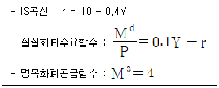
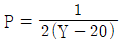
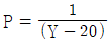
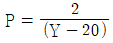
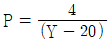
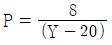
(정답률: 알수없음)
77. 경제활동인구가 6,000만 명으로 불변인 A국에서 매가 취업자 중 직업을 잃는 비율인 실직률이 0.⑤이고, 매기 실업자 중 새로이 작업을 얻는 비율인 구직률이 0.2 이다. 균제상태(steady-state)에서의 실업자의 수는?
- 500만 명
- 800만 명
- 900만 명
- 1,000만 명
- 1,200만 명
(정답률: 알수없음)
78. ( )에 들어갈 내용으로 옳은 것은? (단, 전염병이 발생하기 전의 경제는 균형상태이고, 총공급곡선은 우상향하고 총수요곡선은 우하향한다.)
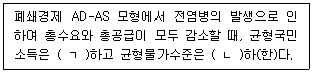
- ㄱ: 감소, ㄴ: 감소
- ㄱ: 불확실, ㄴ: 불변
- ㄱ: 감소, ㄴ: 증가
- ㄱ: 불변, ㄴ: 불변
- ㄱ: 감소, ㄴ: 불확실
(정답률: 알수없음)
79. 갑국의 생산함수는 Y = AL0.6K0.4이다. 총요소생산성 증가율은 5% 이고, 노동량과 자본량 증가율은 각각 -2%와 5% 일 경우, 성장회계에 따른 노동량 1단위당 생산량 증가율은? (단, Y는 총생산량, A는 총요소생산성, L은 노동량, K는 자본량이다.)
- 5%
- 5.5%
- 6.2%
- 7.2%
- 7.8%
(정답률: 알수없음)
80. 아래의 IS-LM 모형에서 균형민간저축(private saving)은? (단, C는 소비, Y는 국민소득, T는 조세, I는 투자, r은 이자율, G는 정부지출, MS는 명목화폐공급량, P는 물가수준, Md는 명목화폐수요량이다.)
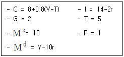
- 2
- 4
- 5
- 8
- 10
(정답률: 알수없음)
3과목: 부동산학원론
81. 토지에 관한 설명으로 옳지 않은 것은?
- 공간으로서 토지는 지표, 지하, 공중을 포괄하는 3차원 공간을 의미한다.
- 자연으로서 토지는 인간의 노력에 의해 그 특성을 바꿀 수 없다.
- 소비재로서 토지는 그 가치가 시장가치와 괴리되는 경우가 있다.
- 생산요소로서 토지는 그 가치가 토지의 생산성에 영향을 받는다.
- 재산으로서 토지는 사용·수익·처분의 대상이 된다.
(정답률: 알수없음)
82. 부동산활동에 관련된 설명으로 옳은 것을 모두 고른 것은?
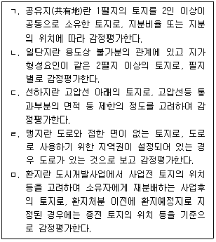
- ㄱ, ㄴ, ㄷ
- ㄱ, ㄷ, ㄹ
- ㄱ, ㄷ, ㅁ
- ㄴ, ㄷ, ㄹ
- ㄴ, ㄹ, ㅁ
(정답률: 알수없음)
83. 토지의 특성에 관한 설명이다. ( )에 들어갈 내용으로 옳게 연결된 것은?
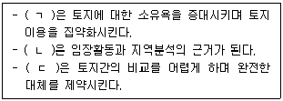
- ㄱ: 개별성, ㄴ: 부동성, ㄷ: 영속성
- ㄱ: 영속성, ㄴ: 부동성, ㄷ: 용도의 다양성
- ㄱ: 영속성, ㄴ: 인접성, ㄷ: 용도의 다양성
- ㄱ: 부증성, ㄴ: 인접성, ㄷ: 부동성
- ㄱ: 부증성, ㄴ: 부동성, ㄷ: 개별성
(정답률: 알수없음)
84. 부동산의 특성에 관한 설명으로 옳은 것의 개수는?
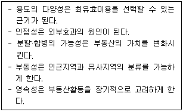
- 1
- 2
- 3
- 4
- 5
(정답률: 알수없음)
85. 디파스퀠리-위튼(DiPasquale & Wheaton)의 사분면 모형에 관한 설명으로 옳지 않은 것은? (단, 주어진 조건에 한함)
- 장기균형에서 4개의 내생변수, 즉 공간재고, 임대료, 자본환원율, 건물의 신규공급량이 결정된다.
- 신축을 통한 건물의 신규공급량은 부동산 자산가격, 생산요소가격 등에 의해 영향을 받는다.
- 자본환원율은 요구수익률을 의미하며 시장이자율 등에 의해 영향을 받는다.
- 최초 공간재고가 공간서비스에 대한 수요량과 일치할 때 균형임대료가 결정된다.
- 건물의 신규공급량과 기존 재고의 소멸에 의한 재고량 감소분이 일치할 때 장기균형에 도달한다.
(정답률: 알수없음)
86. A지역 전원주택시장의 시장수요함수가 QD = 2,600 - 2P 이고, 시장공급함수가 3QS = 600+4P 일 때, 균형에서 수요의 가격탄력성과 공급의 가격탄력성의 합은? (단, QD: 수요량, QS: 공급량, P: 가격이고, 가격탄력성은 점탄력성을 말하며, 다른 조건은 동일함)
- 58/72
- 87/72
- 36/29
- 145/72
- 60/29
(정답률: 알수없음)
87. 부동산시장에 대한 정부의 간접개입방식으로 옳게 묶인 것은?
- 임대료상한제, 부동산보유세, 담보대출규제
- 담보대출규제, 토지거래허가제, 부동산거래세
- 개발부담금제, 부동산거래세, 부동산가격공시제도
- 지역지구제, 토지거래허가제, 부동산가격공시제도
- 부동산보유세, 개발부담금제, 지역지구제
(정답률: 알수없음)
88. 산업입지이론에 관한 설명으로 옳지 않은 것은?
- 베버(A. Weber)는 운송비의 관점에서 특정 공장이 원료지향적인지 또는 시장지향적인지 판단하기 위해 원료지수(material index)를 사용하였다.
- 베버(A. Weber)의 최소비용이론에서는 노동비, 운송비, 집적이익 가운데 운송비를 최적입지 결정에 가장 우선적으로 검토한다.
- 뢰쉬 (A. Lösch)의 최대수요이론에서는 입지분석에 있어 대상지역 내 원자재가 불균등하게 존재한다는 전제 하에, 수요가 최대가 되는 지점이 최적입지라고 본다.
- 아이사드(W. Isard)는 여러 입지 가운데 하나의 입지를 선정할 때 각 후보지역이 가지고 있는 비용최소 요인을 대체함으로써 최적입지가 달라질 수 있다는 대체원리(substitution principle)를 입지 이론에 적용하였다.
- 스미스(D. Smith)의 비용수요통합이론에서는 이윤을 창출할 수 있는 공간한계 내에서는 어디든지 입지할 수 있다는 준최적입지(suboptimal location) 개념을 강조한다.
(정답률: 알수없음)
89. 부동산시장의 효율성에 관한 설명으로 옳은 것은?
- 특정 투자자가 얻는 초과이윤이 이를 발생시키는데 소요되는 정보비용보다 크면 배분 효율적 시장이 아니다.
- 약성 효율적 시장은 정보가 완전하고 모든 정보가 공개되어 있으며 정보비용이 없다는 완전경쟁시장의 조건을 만족 한다.
- 부동산시장은 주식시장이나 일반적인 재화시장보다 더 불완전경쟁적이므로 배분 효율성 을 달성할 수 없다.
- 강성 효율적 시장에서는 정보를 이용하여 초과 이윤을 얻을 수 있다.
- 약성 효율적 시장의 개념은 준강성 효율적 시장의 성격을 모두 포함하고 있다.
(정답률: 알수없음)
90. 주거분리와 여과과정에 관한 설명으로 옳은 것은?
- 여과과정이 원활하게 작동하면 신규주택에 대한 정부지원으로 모든 소득계층이 이득을 볼 수 있다.
- 하향여과는 고소득층 주거지역에서 주택의 개량을 통한 가치상승분이 주태 개량비용보다 큰 경우에 발생한다.
- 다른 조건이 동일할 경우 고가주택에 가까이 위치한 저가주택에는 부(-)의 외부효과가 발생한다.
- 민간주택시장에서 불량주택이 발생하는 것은 시장실패를 의미한다.
- 주거분리현상은 도시지역에서만 발생하고, 도시와 지리적으로 인접한 근린지역에서는 발생하지 않는다.
(정답률: 알수없음)
91. 분양가상한제로 인해 발생할 수 있는 문제점과 그 보완책을 연결한 것으로 옳지 않은 것은?
- 분양주택의 질 하락 - 분양가상한제의 기본 건축비 현실화
- 분양주택 배분 문제 - 주택청약제도를 통한 분양
- 분양프리미엄 유발 - 분양주택의 전매제한 완화
- 신규주택 공급량 감소 - 공공의 저렴한 택지 공급
- 신규주택 공급량 감소 - 신규주택건설에 대한 금융지원
(정답률: 알수없음)
92. 정부의 주택시장 개입에 관한 설명으로 옳지 않은 것은?
- 주택은 긍정적인 외부효과를 창출하므로 생산과 소비를 장려해야 할 가치재(merit goods) 이다.
- 저소득층에 대한 임대주택 공급은 소득의 직접분배효과가 있다.
- 주택구입능력을 제고하기 위한 정책은 소득계층에 따라 달라진다.
- 자가주택 보유를 촉진하는 정책은 중산층 형성과 사회안정에 기여한다.
- 주거안정은 노동생산성과 지역사회에 대한 주민참여를 제고하는 효과가 있다.
(정답률: 알수없음)
93. A투자안의 현금흐름이다. 추가투자가 없었을 때의 NPV( ㄱ )와 추가투자로 인한 NPV증감( ㄴ )은? (단, 0기 기준이며, 주어진 자료에 한함)
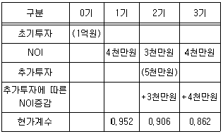
- ㄱ: -260,000원, ㄴ: +16,360,000원
- ㄱ: -260,000원, ㄴ: +17,240,000원
- ㄱ: -260,000원, ㄴ: +18,120,000원
- ㄱ: +260,000원, ㄴ: +16,360,000원
- ㄱ: +260,000원, ㄴ: +17,240,000원
(정답률: 알수없음)
94. 부동산투자회사법상 부동산투자회사에 관한 설명으로 옳은 것은?
- 최저자본금준비기간이 지난 위탁관리 부동산투자회사의 자본금은 70억원 이상이 되어야 한다.
- 자기관리 부동산투자회사의 설립자본금은 3억원 이상으로 한다.
- 자기관리 부동산투자회사에 자산운용 전문인력으로 상근하는 감정평가사는 해당분야에 3년 이상 종사한 사람이어야 한다.
- 최저자본금준비기간이 끝난 후에는 매 분기 말 현재 총자산의 100분의 80 이상이 부동산(건축 중인 건축물 포함)이어야 한다.
- 위탁관리 부동산투자회사는 해당 연도 이익을 초과하여 배당할 수 있다.
(정답률: 알수없음)
95. 부동산투자이론에 관한 설명으로 옳지 않은 것은?
- 변동계수는 수익률을 올리기 위해 감수하는 위험의 비율로 표준편차를 기대수익률로 나눈 값이다.
- 포트폴리오를 구성하면 비체계적 위험을 회피할 수 있다.
- 위험기피형 투자자는 위험부담에 대한 보상심리로 위험할증률을 요구수익률에 반영한다.
- 두 개별자산으로 구성된 포트폴리오에서 자산간 상관계수가 양수인 경우에 음수인 경우보다 포트폴리오 위험절감효과가 높다.
- 투자안의 기대수익률이 요구수익률보다 높으면 해당 투자안의 수요증가로 기대수익률이 낮아져 요구수익률에 수렴한다.
(정답률: 알수없음)
96. 부동산 투자분석기법에 관한 설명으로 옳은 것은?
- 투자규모가 상이한 투자안에서 수익성지수(PI)가 큰 투자안이 순현재가치(NPV)도 크다.
- 서로 다른 투자안 A, B를 결합한 새로운 투자안의 내부수익률(IRR)은 A의 내부수익률과 B의 내부수익률을 합한 값이다.
- 순현재가치법과 수익성지수법에서는 화폐의 시간가치를 고려하지 않는다.
- 투자안마다 단일의 내부수익률만 대응된다.
- 수익성지수가 1보다 크면 순현재가치는 0보다 크다.
(정답률: 알수없음)
97. 대출상환방식에 관한 설명으로 옳지 않은 것은? (단, 주어진 조건에 한함)
- 원금균등분할상환방식은 만기에 가까워질수록 차입자의 원리금상환액이 감소한다.
- 원리금균등분할상환방식은 만기에 가까워질수록 원리금상환액 중 원금의 비율이 높아진다.
- 대출조건이 동일하다면 대출기간동안 차업자의 총원리금상환액은 원금균등분할상환방식이 원리금균퉁분할상환방식보다 크다.
- 차입자의 소득에 변동이 없는 경우 원금균등상환방식의 총부채상환비율(DTI)은 만기에 가까워질수록 낮아진다.
- 차입자의 소득에 변동이 없는 경우 원리금균등분할상환방식의 총부채상환비율은 대출 기간동안 일정하게 유지 된다.
(정답률: 알수없음)
98. A는 다음과 같은 조건을 가지는 원리금균등분할상환방식의 주택저당대출을 받았다. 5년 뒤 대출잔액은 얼마인가? (단, 주어진 자료에 한함)
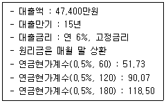
- 20,692만원
- 25,804만원
- 30,916만원
- 36,028만원
- 41,140만원
(정답률: 알수없음)
99. 이자율과 할인율이 연 6%로 일정할 때, A, B, C를 크기 순서로 나열한 것은? (단, 주어진 자료에 한하며, 모든 현금흐름은 연말에 발생함)
- A＞B＞C
- A＞C＞B
- B＞A＞C
- B＞C＞A
- C＞B＞A
(정답률: 알수없음)
100. 부동산증권에 관한 설명으로 옳지 않은 것은?
- 한국주택금융공사는 유동화증권의 발행을 통해 자본시장에서 정책모기지 재원을 조달할 수 있다.
- 금융기관은 주택저당증권(MBS)을 통해 유동성 위험을 감소시킬 수 있다.
- 저당담보부채권(MBB)의 투자자는 채무불이행위험을 부담한다.
- 저당이체증권(MPTS)은 지분형 증권이며 유동화기관의 부채로 표기되지 않는다.
- 지불이체채권(MPTB)의투자자는 조기상환위험을 부담한다.
(정답률: 알수없음)
101. 부동산금융에 관한 설명으로 옳지 않은 것은? (단, 주어진 조건에 한함)
- 대출채권의 듀레이션(평균 회수기간)은 만기일시상환대출이 원리금균퉁분할상환대출보다 길다.
- 대출수수료와 조기상환수수료를 부담하는 경우 차입자의 실효이자율은 조기상환시점이 앞당겨질수록 상승한다.
- 금리하락기에 변동금리대출은 고정금리대출에 비해 대출자의 조기상환위험이 낮다.
- 금리상승기에 변동금리대출의 금리조정주기가 짧을수록 대출자의 금리위험은 낮아진다.
- 총부채원리금상환비율(DSR)과 담보인정비율(LTV)은 소득기준으로 채무불이행위험을 측정하는 지표이다.
(정답률: 알수없음)
102. A는 향후 30년간 매월 말 30만원의 연금을 받을 예정이다. 시중 금리가 연 6% 일 때 , 이 연금의 현재가치를 구하는 식으로 옳은 것은? (단, 주어진 조건에 한함)
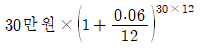
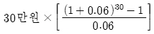
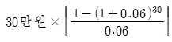
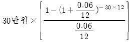
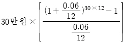
(정답률: 알수없음)
103. 부동산관리와 생애주기에 관한 설명으로 옳지 않은 것은?
- 자산관리(Asset Management)란 소유자의 부를 극대화시키기 위하여 대상부동산을 포트폴리오 관점에서 관리하는 것을 말한다.
- 시설관리(Facility Management)란 각종 부동산시설을 운영하고 유지하는 것으로 시설 사용자나 건물주의 요구에 단순히 부응하는 정도의 소극적이고 기술적인 측면의 관리를 말한다.
- 생애주기상 노후단계는 물리적·기능적 상태가 급격히 악화되기 시작하는 단계로 리모벨링을 통하여 가치를 올릴 수 있다.
- 재산관리(Property Management)란 부동산의 운영수익을 극대화하고 자산가치를 증진시키기 위한 임대차관리 등의 일상적인 건물운영 및 관리뿐만 아니라 부동산 투자의 위험관리와 프로젝트 파이낸싱 등의 업무를 하는 것을 말한다.
- 건물의 이용에 의한 마멸, 파손, 노후화, 우발적 사고 등으로 사용이 불가능할 때까지의 기간을 물리적 내용연수라고 한다.
(정답률: 알수없음)
104. 건물의 관리방식에 관한 설명으로 옳은 것은?
- 위탁관리방식은 부동산관리 전문업체에 위탁해 관리하는 방식으로 대형건물의 관리에 유용하다.
- 혼합관리방식은 필요한 부분만 일부 위탁하는 방식으로 관리자들간의 협조가 긴밀하게 이루어진다.
- 자기관리방식은 관리업무의 타성(惰性)을 방지할 수 있다.
- 위탁관리방식은 외부 전문가가 관리하므로 기밀 및 보안 유지에 유리하다.
- 혼합관리방식은 관리문제 발생시 책임소재가 명확하다.
(정답률: 알수없음)
1⑤. 부동산개발에 관한 설명으로 옳은 것을 모두 고른 것은?
- ㄱ, ㄷ
- ㄷ, ㄹ
- ㄱ, ㄴ, ㄹ
- ㄱ, ㄷ, ㄹ
- ㄴ, ㄷ, ㄹ
(정답률: 알수없음)
106. 부동산마케팅에 관한 설명으로 옳지 않은 것은?
- STP란 시장세분화(Segrnentation), 표적시장(Target rnarket), 포지셔닝(Positioning)을 말한다.
- 마케팅믹스 전략에서의 4P는 유통경로(Place), 제품(Product), 가격(Price), 판매촉진(Prornotion)을 말한다.
- 노벨티(novelty) 광고는 개인 또는 가정에서 이용되는 실용적이며 장식적인 물건에 상호·전화번호 등을 표시하는 것으로 분양광고에 주로 활용된다.
- 관계마케팅 전략은 공급자와 소비자 간의 장기적·지속적인 상호작용을 중요시하는 전략을 말한다.
- AIDA 원리에 따르면 소비자의 구매의사 결정은 행동(Action), 관심(Interest), 욕망(Desire), 주의(Attention)의 단계를 순차적으로 거친다.
(정답률: 알수없음)
107. 부동산개발의 타당성분석 유형을 설명한 것이다. ( )에 들어갈 내용으로 옳게 연결된 것은?
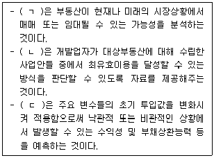
- ㄱ: 시장성분석, ㄴ: 민감도분석, ㄷ: 투자분석
- ㄱ: 민감도분석, ㄴ: 투자분석, ㄷ: 시장성분석
- ㄱ: 투자분석, ㄴ: 시장성분석, ㄷ: 민감도분석
- ㄱ: 시장성분석, ㄴ: 투자분석, ㄷ: 민감도분석
- ㄱ: 민감도분석, ㄴ: 시장성분석, ㄷ: 투자분석
(정답률: 알수없음)
108. 에스크로우(Escrow)에 관한 절명으로 옳지 않은 것은?
- 부동산매매 및 교환 등에 적용된다.
- 권리관계조사, 물건확인 등의 업무를 포함한다.
- 매수자, 매도자, 저당대출기관 등의 권익을 보호한다.
- 은행이나 신탁회사는 해당 업무를 취급할 수 없다.
- 에스크로우 업체는 계약조건이 이행될 때까지 금전·문서·권원중서 등을 점유한다.
(정답률: 알수없음)
109. 부동산 중개계약에 관한 설명으로 옳지 않은 것은?
- 순가중개계약에서는 매도자가 개업공인중개사에게 제시한 가격을 초과해 거래가 이루어 진 경우 그 초과액을 매도자와 개업공인중개사가 나누어 갖는다.
- 일반중개계약에서는 의뢰인이 다수의 개업공인중개사에게 동등한 기회로 거래를 의뢰한 다.
- 공인중개사법령상 당사자간에 다른 약정이 없는 경우 전속중개계약의 유효기간은 3월로 한다.
- 공동중개계약에서는 부동산거래정보망 등을 통하여 다수의 개업공인중개사가 상호 협동하여 공동으로 거래를 촉진한다.
- 독점중개계약에서는 의뢰인이 직접 거래를 성사시킨 경우에도 중개보수 청구권이 발생한다.
(정답률: 알수없음)
110. 공인중개사법령상 개업공인중개사가 주택을 중개하는 경우 확인·설명해야 할 사항이 아닌 것은?(문제 오류로 확정답안 발표시 모두 정답처리 되었습니다. 여기서는 1번을 누르면 정답 처리 됩니다.)
- 일조·소음·진동 등 환경조건
- 소유권·전세권·임차권 등 권리관계
- 주택공시가격·중개보수 및 실비의 금액
- 권리를 취득함에 따라 부담하여야 할 조세의 종류 및 세율
- 토지이용계획, 공법상의 거래규제 및 이용제한에 관한 사항
(정답률: 알수없음)
111. A지역 주택시장의 시장수요함수는 QD = -2P+ 2,400 이고 시장공급함수는 QS = 3P - 1,200 이다. 정부가 부동산거래세를 공급측면에 단위당 세액 20만원의 종량세 형태로 부과하는 경우에 A지역 주택시장의 경제적 순손실은? (단, QD: 수요량, QS: 공급량, P: 가격, 단위는 만호, 만원이며, 다른 조건은 동일함)
- 60억원
- 120억원
- 240억원
- 360억원
- 480억원
(정답률: 알수없음)
112. 다음 설명에 모두 해당하는 부동산조세는?
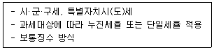
- 종합부동산세
- 양도소득세
- 취득세
- 등록면허세
- 재산세
(정답률: 알수없음)
113. 부동산 권리분석에 관한 설명으로 옳지 않은 것은?
- 권리분석의 원칙에는 능률성, 안전성, 탐문주의, 증거주의 등이 있다.
- 건물의 소재지, 구조, 용도 등의 사실관계는 건축물대장으로 확인·판단한다.
- 임장활동 이전 단계 활동으로 여러 가지 물적 증거를 수집하고 탁상으로 검토하여 1차적으로 하자의 유무를 발견하는 작업을 권리보증이라고 한다.
- 부동산의 상태 또는 사실관계, 등기능력이 없는 권리 및 등기를 요하지 않는 권리관계 등 자세한 내용까지 분석의 대상으로 하는 것이 최광의의 권리분석이다.
- 매수인이 대상부동산을 매수하기 전에 소유권을 저해하는 조세체납, 계약상 하자 등을 확인하기 위해 공부 등을 조사하는 일도 포함된다.
(정답률: 알수없음)
114. 부동산 권리분석 시 등기능력이 없는 것으로 묶인 것은?
- 지역권, 지상권
- 유치권, 점유권
- 전세권, 법정지상권
- 가압류, 분묘기지권
- 저당권, 권리질권
(정답률: 알수없음)
115. 감정평가에 관한 규칙상 원가방식에 관한 설명으로 옳지 않은 것은?
- 원가법과 적산법은 원가방식에 속한다.
- 적산법에 의한 임대료 평가에서는 대상물건의 재조달원가에 기대이율을 곱하여 산정된 기대수익에 대상물건을 계속하여 임대하는 데에 필요한 경비를 더한다.
- 원가방식을 적용한 감정평가서에는 부득이한 경우를 제외하고는 재조달원가 산정 및 감가수정 동의 내용이 포함되어야 한다.
- 입목 평가 시 소경목림(小經木林)인 경우에는 원가법을 적용할 수 있다.
- 선박 평가 시 본래 용도의 효용가치가 있으면 선체·기관·의장(艤裝)별로 구분한 후 각각 원가법을 적용해야 한다.
(정답률: 알수없음)
116. 할인현금흐름분석법에 의한 수익가액은? (단, 주어진 자료에 한함, 모든 현금흐름은 연말에 발생함)
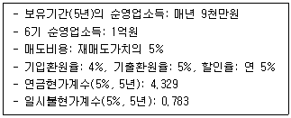
- 1,655,410,000원
- 1,877,310,000원
- 2,249,235,000원
- 2,350,000,000원
- 2,825,000,000원
(정답률: 알수없음)
117. 수익환원법에 관한 설명으로 옳지 않은 것은?
- 운영경비에 감가상각비를 포함시킨 경우 상각전환원율을 적용한다.
- 직접환원법에서 사용할 환원율은 시장추출법으로 구하는 것을 원칙으로 한다.
- 재매도가치를 내부추계로 구할 때 보유기간 경과 후 초년도 순수익을 반영한다.
- 할인 또는 환원할 순수익을 구할 때 자본적지출은 비용으로 고려하지 않는다.
- 요소구성법으로 환원율을 결정할 때 위험요소를 적극적으로 반영하면 환원율은 커진다.
(정답률: 알수없음)
118. 감정평가사 A는 B토지의 감정평가를 의뢰받고 인근지역 나지 거래사례인 C토지를 활용해 2억원으로 평가했다. A가 C토지 거래금액에 대해 판단한 사항은? (단, 주어진 자료에 한함)
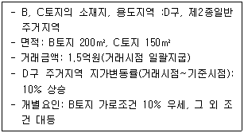
- 정상
- 10% 고가
- 20% 고가
- 21% 고가
- 31% 고가
(정답률: 알수없음)
119. 감정평가에 관한 규칙에서 규정하고 있는 내용으로 옳지 않은 것은?
- 기업가치의 주된 평가방법은 수익환원법이다.
- 적정한 실거래가는 감정평가의 기준으로 적용하기에 적정하다고 판단되는 거래가격으로서, 거래시점이 도시지역은 5년 이내, 그 밖의 지역은 3년 이내인 거래가격을 말한다.
- 시산가액 조정 시, 공시지가기준법과 그 밖의 비교방식에 속한 감정평가방법은 서로 다른 감정평가방식에 속한 것으로 본다.
- 필요한 경우 관련 전문가에 대한 자문등을 거쳐 감정평가할 수 있다.
- 항공기의 주된 평가방법은 원가법이며, 본래 용도의 효용가치가 없는 물건은 해체처분가액으로 감정평가할 수 있다.
(정답률: 알수없음)
120. 수익환원법(직접환원볍)에 의한 대상부동산의 가액이 8억원얼 때, 건물의 연간 감가율(회수율)은? (단, 주어진 자료에 한함)
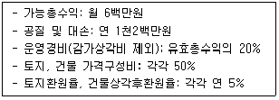
- 1%
- 2%
- 3%
- 4%
- 5%
(정답률: 알수없음)
- "ㄷ"도 옳은 설명이다. 민법의 법원은 대한민국 법원 중에서 가장 기본적인 법원으로, 민사소송, 가사소송, 상사소송 등 민법상의 소송을 다룬다.
- "ㄱ"은 옳지 않은 설명이다. 민법의 법원은 대한민국 법원 중에서 가장 기본적인 법원이지만, 대한민국 법원 중에서 유일하게 민사소송, 가사소송, 상사소송 등 민법상의 소송을 다루는 것은 아니다. 예를 들어, 헌법소원, 행정소송, 형사소송 등 다른 법률 분야의 소송도 다룰 수 있다.
- "ㄱ, ㄷ"는 "ㄴ"과 "ㄷ"의 설명에 중복되는 내용이므로 옳지 않은 선택지이다.
- "ㄱ, ㄴ, ㄷ"는 모두 옳은 설명이지만, 문제에서는 "모두 고른 것"이 아니므로 선택하지 않는다.